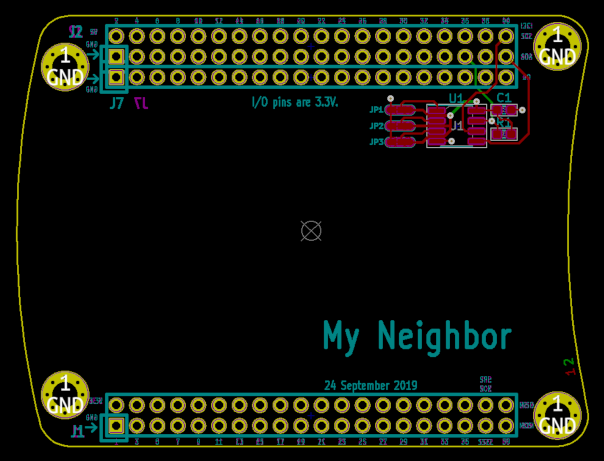

This project template can be used to create a two-layer Neighbor, an add-on board for GreatFET.
When using this template, please refer to How to Design a Neighbor.

This template is open source. Copyright 2019 Great Scott Gadgets